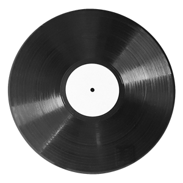
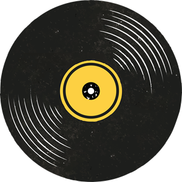
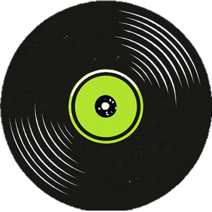
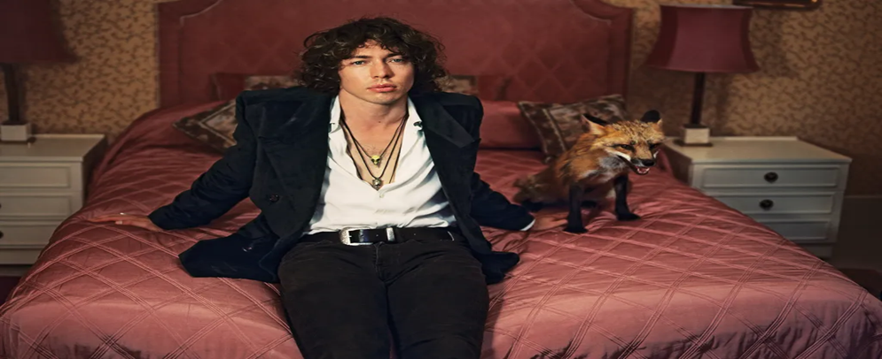

Barns comenzó con un sonido muy orgánico y rebelde, casi como si cada canción fuera grabada en una sola toma con la adrenalina al máximo. Con el tiempo, ha incorporado más producción electrónica y elementos pop sin perder su esencia vocal rasposa y emocional.
Sencillos destacados:

| Numero de canciones |
Nombre | Vistas |
|---|---|---|
| 1 | Hollow | 781K |
| 2 | You and I | 17K |
| 3 | "99" | 2.7M |
| 4 | London Girls | 3M |
| 5 | Fun Never Ends | 712K |
| 6 | Boy like me | 490K |
| 7 | The kings Are Alright | 514K |
| 8 | Castaway | 3.3M |
| 9 | Baby London | 2.7M |
| 10 | CannonBall | 880K |

| Numero de canciones |
Nombre | Vistas |
|---|---|---|
| 1 | Fire | 33M |
| 2 | Hands | 447K |
| 3 | Golden Dandelions | 255K |
| 4 | Hellfire | 821k |
| 5 | Hobo Rocket | 1.1M |
| 6 | Hobo Outside Tesco, London (Interlude) | 490K |
| 7 | Champion | 514K |
| 8 | Kicks | 11M |
| 9 | Never Let You Down | 3M |
| 10 | Goodbye John Smith | 1.3M |

Entre cicatrices y símbolos: el arte de Barns
| Numero de canciones |
Nombre | Vistas |
|---|---|---|
| 1 | Fire - EP | 15M |
| 2 | Glitter - EP | 35M |
| 3 | Little Boy | 758K |
| 4 | Hellfire - EP | 6.3M |
| 5 | Hands | 699K |
Viste la energía de lo oculto, lleva contigo el poder del escenario.
